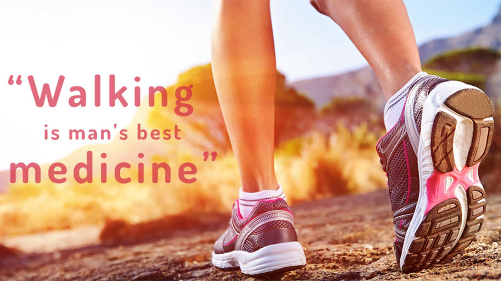
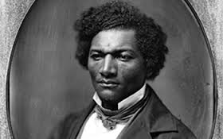

Nutrition
Try to have “Meat Free Meals” as often as possible, this will help you feel much better, and get your body
weight to its optimum natural weight. Also, you won’t suffer from the “drag” or heavy feeling associated
with the body’s difficulty in digesting so much meat. As you gain in nutritional knowledge, you’ll learn the
AMAZING facts on how to combine plant based sources of protein to yield better quality food than animal
based sources of protein.
Exercise
Walking has been found to be beneficial to burn calories and improve heart health. Walking reduces the
shock on the joints that shows up in later years as painful knees and ankles. Walking in fresh air allows the
body to throw off accumulated toxins.

Water
Drinking water helps to keep your brain functioning at its peak. What's more, when you get enough water,
you are able to concentrate better and your mood is elevated. You have less headaches. Water clears your skin. Since your joints have a specialized fluid in them which is partially made of water, water can help ease arthritis and achy joints. How much water should you drink per day to get these benefits? Half to 2/3 of your body weight in ounces!
Sunshine
When you get sunlight, you get vitamin D. Sunlight triggers your skin to make vitamin D. Vitamin D is what
makes for strong bones. Also, did you know that sunlight kills microorganisms? It has an antiseptic effect. Sunlight helps to elevate your mood, and lower your blood pressure, at the same time. No wonder it is one of the eight
"doctors"!
Temperance
Temperance means abstinence! from drugs, alcohol, caffeine, and other harmful substances to the body. Now
we know that drugs are harmful, but did you know that caffeine puts stress on the nervous system and causes it to overwork? Did you know that a well executed global study found that no levels of alcohol were safe drink? Don't take my word for it! Here's the study: No alcohol safe to drink, global study confirms

Air
Have you ever felt sluggish after staying inside the house for a long period of time? Fresh air to the
rescue! Getting fresh air helps oxygenate your blood, which fuels your brain, which helps you to feel better.
Fresh air also cleans out your lungs from impurities, and also strengthens white blood cells in fighting germs. Another benefit of fresh air is that it helps to improve your blood pressure.
Rest
When you get enough sleep, your body has a chance to repair itself, and during sleep, your brain organizes
its memories. Sleep is not something you can "catch up" on. You have to be consistent. When you get enough
sleep, (which is about 7-10 hours each night), your metabolism burns fat more efficiently, you concentrate better, and you place yourself at less of a risk for diabetes. You also have a positive impact on your mood!
Trust in God
God made us so He knows what is best for us. Marilyn Schlitz, Ph.D., and lecturer at Harvard, says, “It's
clear from the correlational studies within the epidemiology data that positive relationships exist between religious and spiritual practice and health outcomes on a variety of different conditions.” Moreover, she says that in a study and confirmation study on intercessory prayer, “the prayer groups had statistically significant improvements in outcome, suggesting that the intervention has clinical relevance.”
We can learn more about God through reading His Word, the Bible, and by seeking to learn lessons about Him from nature. The Bible is full of promises about how God will fulfill our needs. We can claim these promises through prayer, just as if they had been spoken directly to us. Then you can believe that he will always answer you in the best possible way because of His great love for you.